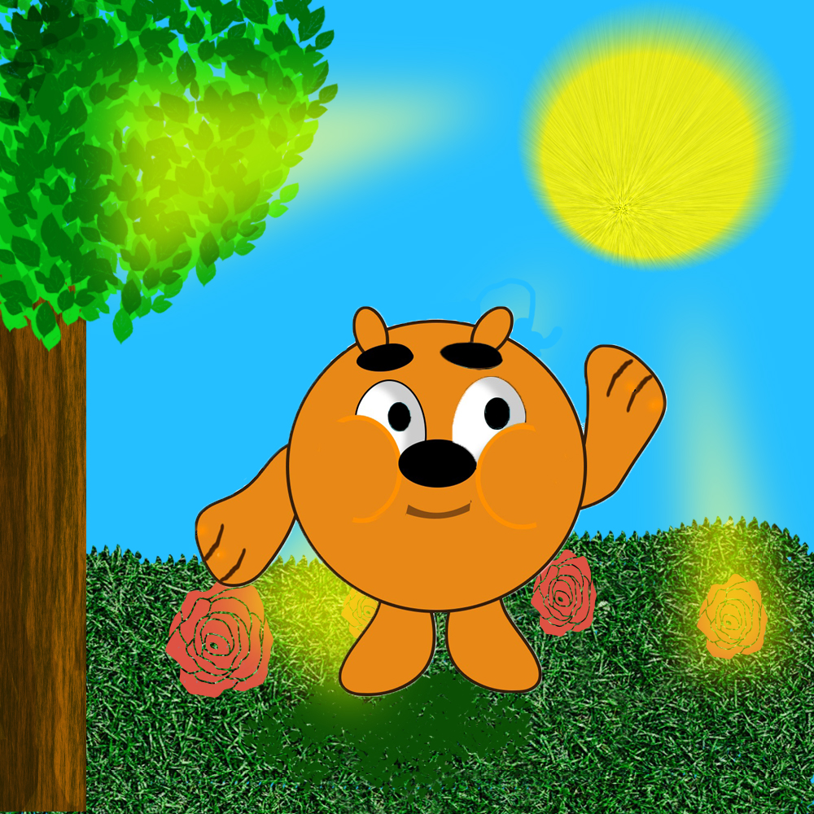

HELLO FROM MARINA
Я - Марина Сайковская.
У мене день нарождення 02.09.12. Я живу у Києві,
та
вчусь у школи № 228.
Мені подобається кататися на гіро-борді, я люблю малювати, робити ігри у «Scratch», та
робити
щось у «Ps-фотошоп»!
Заціни!
Вмикай музику і дивись відео на повний екран
Перелік моїх ігор на сайті Scratch
(тисни на назви)
- Історія "LOST in SPACE"
- Гра "ГАВ-ГАВ!"
- Гра "Кіт та Миша"
- Гра "Magic Ball"
- Гра "Ping-Pong"
- Гра "Влови Кажана"
- Гра "Maze" (для ПК)
- Гра "Flappy Bird" (для ПК)
- Гра "Нахабний Краб" (для ПК)
- Гра "Snake" (для ПК)
- Гра "Лови
кульки"
(для ПК с камерою) - Мультик "Сова і Лисиця"
- Мультик "Летючі штучки"
- Гра "Баскетбол"
- Гра "Доганялки"
- "Зірковий портал у Космосі"
- Мультик "Дикий їжак"
- Гра "Швидкі мандри"
Гра "ГАВ-ГАВ!"
"Зірковий портал у Космосі"
Гра "Швидкі мандри"
My Portfolio
Копатыч
 Панда кунфу космос
Панда кунфу космос
 Марина кунфу космос
Марина кунфу космос
 Марина Панда кунфу космос
Марина Панда кунфу космос
 кошкин дом
кошкин дом Я и "лего"
Я и "лего"
 мое-фото
мое-фото кукла-Марина
кукла-Марина Я в сказке
Я в сказке В национальном костюме
В национальном костюме В белом
платье с розой
В белом
платье с розой звездная орбита-1
звездная орбита-1 звездная орбита-2
звездная орбита-2 я
и звездное небо
я
и звездное небо